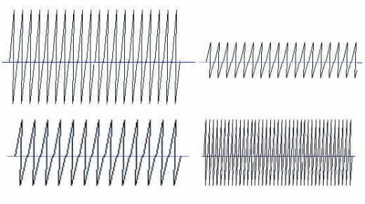
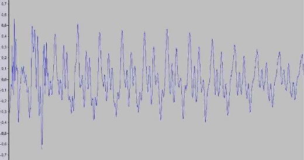
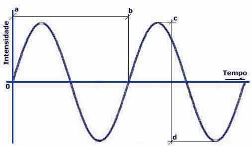
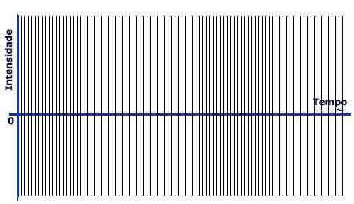
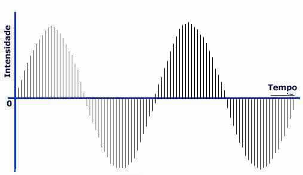
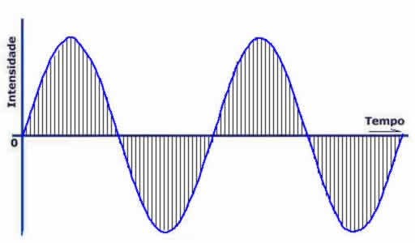
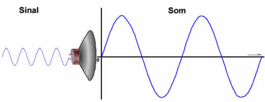

Digitalizando Sons
5 minutos de leitura
Transcrevendo
Obs: Esse texto é de total autoria e todos os créditos são de © Benito Piropo Da-Rin.
O texto original foi retirado de: http://www.bpiropo.com.br/fpc20050110.htm
Compartilho o texto aqui tanto para estudos pessoais como para compartilhar para mais pessoas que se interessam por esse conhecimento.
Nas duas últimas colunas examinamos o processo de digitalização de imagens. E mencionamos que qualquer grandeza do mundo real pode ser digitalizada, ou seja, convertida em números que podem ser expressos no sistema binário e, portanto, processados por um computador. Mas seria isso realmente possível? Como digitalizar, por exemplo, sons?
Computadores são um fenômeno recente. Portanto não é de admirar que a digitalização de sons também o seja. Na verdade, foi apenas em 1983 que os primeiros discos com som digitalizado foram produzidos graças à uma tecnologia desenvolvida pelas empresas Sony e Phillips. Quando comparados aos discos de vinil que se usavam na época, os discos de áudio digital eram menores, mais compactos e por isso receberam o nome de “discos compactos”, ou Compact Disks, e passaram a ser conhecidos apenas por “CDs”.
Sim, é isso mesmo, os CDs que usamos hoje para dados nada mais são que a transposição para armazenamento de dados e informações da tecnologia usada para armazenar música digitalizada. Afinal, depois de digitalizada, toda informação é representada por números, e portanto nada impede que se use a mesma tecnologia de armazenamento para qualquer tipo de dado, música, imagens ou seja lá o que for.
É fato que os primeiros CDs de áudio não foram feitos para serem reproduzidos em um computador pessoal. Na verdade, no que diz respeito à reprodução de sons, os computadores pessoais do início da década de oitenta eram máquinas toscas. Seu pequeno alto-falante somente reproduzia bipes, que eram usados principalmente como alarme e aviso de erros. Mas os reprodutores de CDs (“CD players”) da época adotavam rigorosamente a mesma tecnologia empregada pelos modernos computadores multimídia para a reprodução de sons.
Mas voltemos ao que interessa: como digitalizar sons?
Aquilo que conhecemos como “som” na verdade nada mais é que uma sucessão de compressões e descompressões do ar. Ou seja: som é ar que vibra. Me refiro, evidentemente, ao som que se propaga no ar. Para o indivíduo mal-educado que encosta o ouvido à parede para ouvir o que se fala do outro lado, som é a parede que vibra. Para quem está mergulhando próximo ao fundo de uma piscina e ainda assim consegue ouvir os ruídos do ambiente acima dele, som é água que vibra. Em suma: som é algo que vibra e se propaga seja pelo ar, através de compressões e descompressões, seja através de um material sólido ou líquido, que vibra em consonância com o som produzido.
Repare na animação da Figura 1. Imagine que a linha marrom que se encurva para cima e para baixo seja, por exemplo, uma corda de violão ou piano, vibrando após ter sido tangida. As linhas azuis representam as camadas de ar que se situam entre a corda que vibra e seu ouvido. Note que quando a corda se encurva para cima, no sentido de seu ouvido, ela “empurra” as camadas de ar umas contra as outras, aumentando a pressão. Já quando a corda vibra no sentido contrário, ela “puxa” o ar, distendendo-o (não se esqueça que o ar é um gás elástico; é por isso que bolas de futebol “quicam”) e reduzindo a pressão. E na medida que a corda vibra em ambos os sentidos, a pressão aumenta e diminui de acordo com esta vibração. Seu ouvido é, na verdade, um instrumento de extrema precisão capaz de medir as menores variações da pressão do ar.
Veja, do lado direito da animação, um gráfico da variação desta pressão sincronizado com o movimento da corda. Quando a corda sobe, aumentando a pressão, a linha marrom se projeta para cima até atingir ponto máximo quando a corda atinge sua curvatura máxima. Em seguida a pressão começa a diminuir, chegando a zero, quando a corda fica completamente estendida na horizontal, e passando a partir de então a assumir valores negativos até o valor mínimo, que corresponde à curvatura máxima da corda no sentido oposto. O vai-vem da corda, que comprime e descomprime o ar, se reflete no gráfico em forma de onda do lado direito da figura.
É assim que se forma uma “onda sonora”. Note que a difusão de ciclos de compressão-descompressão ao longo de um meio elástico nada mais é que a propagação de uma forma de energia, a energia sonora. Essas compressões e descompressões penetram no nosso pavilhão auricular, se propagam em seu interior até incidir sobre uma fina membrana chamada “tímpano” situada no limite do chamado “ouvido externo” (na verdade, ela o separa do ouvido médio), fazendo-a vibrar. A vibração do tímpano se propaga até as terminações nervosas do ouvido interno que a conduz ao cérebro. Que então “traduz” aquelas vibrações nos sons que percebemos.
Todo som tem duas características básicas: intensidade (que nos permite distinguir entre um som forte ou fraco; um grito é um som mais intenso que um sussurro) e altura (que nos permite distinguir entre um som grave e agudo; o trinado de um pássaro é mais agudo que o rosnar de um cão). É preciso ter cuidado com esses conceitos, já que na linguagem popular diz-se que um som é “alto” querendo com isso dizer que ele é intenso. “Abaixar” o rádio, para o leigo, significa reduzir a intensidade do som, não sua altura.
As variações de intensidade e altura dos sons se refletem na forma de suas ondas. Veja na Figura 2 a diferença entre as formas das ondas de sons de diferentes intensidades e alturas. No alto estão representadas formas de onda de sons de mesma altura e diferentes intensidades (o da esquerda é mais intenso, ou seja, mais forte) e embaixo sons de mesma intensidade e diferentes alturas (o da direita é mais alto, ou seja, mais agudo). Como se pode depreender do exame da Figura 2, a intensidade do som depende da amplitude da onda (ou seja, de quanto seus picos e vales se afastam da linha base) enquanto a altura depende da freqüência da onda, ou seja, do número de vezes que ela vibra na unidade de tempo.

Isso não é apenas teoria. Os sons que ouvimos na vida real são mesmo representados por ondas como as mostradas na Figura 2. A diferença é que qualquer uma das quatro ondas sonoras representadas na Figura 2 correspondem a sons cuja intensidade e altura não variam ao longo do tempo (ou seja, cujas amplitude e freqüências se mantêm constantes) e portanto produzem um som monótono (de apenas um tom), que não se altera, como um diapasão vibrando sempre na mesma intensidade. Já as ondas que representam os sons da vida real mostram variações tanto na intensidade (amplitude) quanto na altura (freqüência), assumindo um formato menos regular.

A Figura mostra a forma de onda de um som simples, um mero “bump”, cuja simplicidade se reflete na relativamente pequena variação do formato da onda sonora. Se você quiser ter idéia do som a que corresponde esta forma de onda, clique no ícone do Objeto 1.
Do que vimos aqui podemos concluir que, não importa qual seja seu grau de complexidade, todo e qualquer som pode ser fielmente representado por uma onda sonora. Não importa que seja um grito de dor, um mavioso trinado de um pássaro ou uma sublime melodia, seja ele qual for, haverá uma onda cujo formato o representará.
Falta ver como poderemos exprimir essa onda usando apenas números.
Semana passada vimos as características do som e concluímos lembrando que, seja qual for seu grau de complexidade, todo e qualquer som pode ser fielmente representado por uma onda sonora. E vimos ainda que o “desenho” da onda reflete as duas características principais do som: intensidade e freqüência (também chamada de “altura”). Vamos esclarecer melhor isso usando como exemplo o tipo de onda mais comum, a onda senoidal (que tem esse nome porque representa a variação do valor do seno de um ângulo, ou seja, é a representação gráfica da função “y = sen x”) como a representada na Figura.

Interprete a Figura como a representação gráfica da variação da intensidade do som instante a instante ao longo do tempo. Como se vê, nesse exemplo, a intensidade parte de zero, sobe até o valor máximo (crista ou pico da onda) e em seguida começa a declinar, caindo novamente até zero (quando atravessa a linha horizontal que representa o eixo do tempo), continua diminuindo de intensidade (assumindo, portanto, valores negativos) até o ponto mínimo (vale da onda), quando volta a crescer até nova crista e assim por diante.
A amplitude da onda, que reflete sua intensidade, corresponde à distância vertical entre um pico e um vale sucessivos. Na Figura 1 a amplitude corresponde à distância entre os pontos “c” e “d”. Quanto maior essa distância, mais intenso (ou seja, mais “barulhento”) é o som.
Já a freqüência da onda é definida pelo número de ciclos que ocorrem em uma unidade de tempo. Explicando melhor: o “ciclo” da onda é o trecho que contém uma crista e um vale completos. Na Figura 1 ele corresponde ao trecho compreendido entre os pontos “a” e “b”. Pois bem: a freqüência é o número de ciclos que ocorrem em cada segundo. Sua unidade denomina-se Hertz e corresponde a uma onda que executa um ciclo por segundo e cujo som é inaudível, pois nosso ouvido não é capaz de percebê-lo (mas nem por isso deixa de ser um som...)
Embora as pessoas de ouvidos mais sensíveis possam apenas identificar sons cujas freqüências variam na faixa de 20 Hz a 20.000 Hz (ou 20 KHz, quilohertz), vibrações com freqüências superiores ou inferiores continuam sendo sons, apenas não conseguimos ouvi-los (quem conhece os “apitos para cães” pode entender melhor a questão; como o ouvido dos cães é muito mais sensível que o nosso, eles conseguem perceber claramente sons de freqüências muito mais elevadas que 20 KHz; soprar um apito desses junto a um cachorro, embora você não ouça absolutamente nada, faz o cão imediatamente dar mostras de ter ouvido o som produzido pelo apito em uma freqüência que ele percebe mas você não).
Resumindo: a forma, ou “desenho” da onda, contém as duas informações básicas que definem o som: sua intensidade, medida em cada instante pela amplitude, e sua freqüência, proporcional ao número de vezes que a linha que define a onda corta o eixo horizontal a cada segundo (na verdade, igual á metade desse número, já que em cada ciclo a onda corta o eixo duas vezes, ao subir e ao descer). Agora, com esses conceitos em mente, examine novamente as ondas representadas nas Figuras 3 e 4 da coluna anterior e perceba como a complexidade do som se reflete no formato da onda que o define.
Então, para digitalizar o som, tudo o que precisamos é uma forma de representar o formato da onda usando apenas números. Uma coisa tão fácil como uma brincadeira de criança. E não estou usando uma figura de linguagem, estou me referindo efetivamente a uma brincadeira de criança, aquela que consiste em desenhar uma figura unindo com um traço contínuo pontos numerados.
A essência do problema consiste no fato de que a onda sonora é representada por uma linha contínua, que apresenta variações infinitesimais ao longo do tempo. Em outras palavras: é “analógica”. Computadores lidam mal com grandezas analógicas. A solução é decompor a grandeza em uma enorme quantidade de pequenos componentes e representar cada um deles por um número (ou seja, “digitalizar” a grandeza). Quanto maior a quantidade desses componentes, melhor será representada a grandeza. Por exemplo: o espectro luminoso contínuo que compõe o arco-íris uma grandeza analógica.
Mas, como vimos ao discutirmos a digitalização de imagens, ele pode ser decomposto em pequenos segmentos, cada um deles representando uma cor e correspondendo a um número. Quando este número de segmentos é pequeno (por exemplo, 256) o conjunto de cores fica mal representado. Se aumentarmos para 65.536 (64K), teremos uma imagem muito mais suave. E se aumentarmos para mais de 16 milhões de segmentos, teremos uma representação absolutamente fiel das cores. Nosso problema consiste em fazer algo parecido com os sons: representar a forma de uma onda sonora com números.
Primeiro, vamos tomar o gráfico sobre o qual desenhamos a onda e dividi-lo na forma de uma grade formada por linhas verticais. Veja isto representado na Figura.

Nesse gráfico, o eixo vertical representa o valor da intensidade do som e o eixo horizontal representa o tempo decorrido. A distância entre duas linhas verticais que formam a grade representa, portanto, um intervalo de tempo. Digamos que, no gráfico acima, esse intervalo seja da ordem de um décimo milésimo de segundos. Portanto, na distância horizontal correspondente a um segundo, teríamos dez mil dessas linhas verticais, cada uma representando um instante. Em cada um desses instantes colheremos uma “amostra” de nosso som.
Agora vamos captar o som. A forma mais simples de fazer isso é usando um microfone. Mas o que é um microfone?
Um microfone é um “transdutor”. Ele capta as vibrações da onda sonora através da variação da pressão do ar que o som provoca ao se propagar. Essa variação de pressão é convertida por um circuito eletrônico interno em variações de intensidade de corrente elétrica (por exemplo com o uso de cristais piezoelétricos; se quiser saber mais sobre a tecnologia pizoelétrica, que converte variações de pressão em tensões elétricas e vice-versa, vá até a seção “Pesquisar” de meu sítio em < www.bpiropo.com.br > e efetue uma busca com o temo “piezoelétrica”). Note que o microfone não digitaliza: ele apenas converte uma onda sonora, analógica, em um “sinal” (variações contínuas de tensão ou intensidade de corrente elétrica), também analógico.
Ou seja: um microfone transforma uma onda sonora em um sinal elétrico cujas variações correspondem às variações da onda sonora, um sinal que representa fielmente a onda sonora (quão “fielmente” depende, naturalmente, da qualidade do microfone, de sua sensibilidade e precisão). Este sinal é enviado ao computador, mais precisamente à controladora (ou “placa”) de som.
Agora sim: circuitos eletrônicos não sabem lidar com variações de pressão mas se entendem perfeitamente com sinais elétricos. O sinal gerado pelo microfone, ao entrar na placa de som, é encaminhado a um circuito denominado ADC (Analog/Digital Converter, ou conversor analógico/digital) cuja função é efetuar uma amostragem (em inglês, “sampling”) do sinal sonoro, colhendo amostras (ou seja, medindo sua intensidade) em intervalos muito curtos e registrando essas intensidades sob a forma de números.
Se voltarmos à Figura 2 veremos que os pontos de amostragem estão ali representados pelas retas verticais, dez mil delas em cada segundo. Colher amostras significa medir a intensidade do sinal exatamente no instante representado por cada reta e anotar esta intensidade sob a forma de um segmento de reta cujo comprimento é proporcional a ela. O resultado será algo parecido com o mostrado na Figura.

Pronto, agora temos uma coleção de amostras em formato de números, cada um representando o comprimento de um dos segmentos de reta vertical mostrados na Figura 3. Os segmentos situados acima do eixo horizontal são representados por números positivos, os situados abaixo por números negativos. Essa sucessão de números expressos no sistema binário pode ser armazenada em um arquivo. Ela contém todas as informações necessárias para caracterizar uma onda sonora e é, portanto, um arquivo de som digitalizado.
É assim que se digitaliza sons.
Mas não adianta digitalizar um som se ele não puder ser reconstituído para ser ouvido. E essa tarefa também é cumprida por um dos circuitos eletrônicos da controladora (placa) de som, desta vez o DAC (Digital/Analog Converter, ou conversor analógico digital), que cumpre a função inversa do CAD. Essa função corresponde a “unir os pontos” formados pelas extremidades das linhas verticais da Figura 3 reconstituindo a onda que forma o sinal elétrico. Sua função pode ser melhor compreendida examinando-se a Figura

Para se reproduzir (“tocar”) um som armazenado em um arquivo, este arquivo é lido no disco e seu conteúdo enviado ao DAC da controladora de som sob a forma de uma sucessão de números. O DAC recebe cada um desses números e gera um sinal elétrico cuja intensidade de corrente é, em cada instante, proporcional aos números recebidos sucessivamente. Esse sinal é uma grandeza analógica, o que justifica o nome do DAC. A variação de sua intensidade de corrente é representada pela linha azul na Figura 4. Este sinal é então amplificado (ou seja, tem sua intensidade reforçada) e enviado ao alto-falante das “caixas de som” do computador.
Um alto-falante é também um “transdutor”. Ele executa uma função inversa à do microfone, ou seja, converte o sinal elétrico em som. Isso nada tem a ver com digitalização (tanto o sinal elétrico quanto a onda sonora gerada pelo alto-falante são sinais analógicos), portanto não cabe aqui uma explicação muito detalhada. Basta dizer que isso é feito fazendo o sinal atravessar uma bobina enrolada em torno de um ímã. A variação da corrente elétrica do sinal que atravessa a bobina gera um campo magnético cuja intensidade varia proporcionalmente à do sinal, fazendo o ímã vibrar em consonância com essa variação de intensidade. Este ímã está preso no vértice de um cone de material ligeiramente flexível (uma espécie de papelão) que vibra com o ímã, fazendo o ar vibrar e, assim, reconstituindo o som que foi capturado pelo microfone e digitalizado.

A fidelidade do som reproduzido, ou seja, o quanto suas qualidades se aproximam das do som original, depende de diversos fatores. Um deles é o equipamento de som propriamente dito, ou seja, o microfone usado para capturar o som, o amplificador (analógico) do sinal e os alto-falantes, fatores responsáveis pela diferença entre o som reproduzido em um radinho de pilha e em um sistema de som de alta qualidade. Mas esse é apenas um dos fatores. Há outros que dependem do processo de digitalização.
Desses, dois são especialmente importantes: a quantização e a taxa de amostragem (“quantization” e “sampling rate”).
A taxa de amostragem representa o número de amostras de som colhidas na unidade de tempo, ou o número de vezes que a amplitude da onda sonora é medida em cada segundo. Ela corresponde à “densidade” das linhas verticais da Figura 2, ou seja, ao número de linhas contidas em cada segundo. Nós usamos em nosso exemplo a taxa fictícia de 10.000 amostras por segundo (ou 10 KHz). Nos sistemas reais, as taxas variam de 8 KHz (telefone que transmite voz digitalizada) até 96 KHz (utilizada no áudio em DVD, discos padrão Blue-Ray e trilhas sonoras de TV de alta definição, ou HDTV).
Os sistemas que usam as controladoras de som mais simples usam uma taxa de amostragem de 11,025 KHz enquanto os mais sofisticados (classificados como “CD quality”, ou qualidade de CD) usam taxas de amostragem quatro vezes maiores, ou 44,1 KHz (também usada nos CDs de áudio). Quanto maior a taxa de amostragem maior a fidelidade do som digitalizado.
Já quantização tem a ver com o número possível de níveis sonoros que cada amostra pode registrar. Para entender, examine novamente a Figura 3. Veja que ela consiste em uma sucessão de linhas verticais, cada uma correspondendo a uma “amostra” do som. O comprimento de cada linha, que representa o nível da intensidade do som naquele momento, corresponde a um número. Vamos supor que eu use um número binário de um byte (8 bits) para armazenar o valor máximo dessa grandeza (que, como você já deve ter percebido, corresponde à maior amplitude de onda que pode ser armazenada).
Nesse caso eu só poderia armazenar 256 níveis diferentes de intensidade (zero e mais os 255 números decimais que podem ser representados com oito bits). Mas se eu usar dois bytes (16 bits) para representar o nível de intensidade, poderei optar por 65.536 níveis diferentes (zero e mais os 65.535 números decimais que podem ser representados com 16 bits). Isso faz com que o som digitalizado possa representar variações muito mais suaves de intensidade.
Portanto quanto maior o número de bits usados para quantizar cada amostra, melhor a qualidade do som. Computadores usam quantizações de oito, doze e dezesseis bits. O som de “qualidade de CD” usa uma quantização de 16 bits para cada um de seus dois canais (o som “estereofônico” digitaliza dois canais, cada canal usando um microfone para capturar o som e um alto-falante para reproduzi-lo; isso dá uma sensação “espacial” ao som percebido por nossos dois ouvidos).
Basicamente, é isso. A única observação que ainda cabe aqui tem a ver com o tamanho do arquivo do som digitalizado. Vimos que, no que diz respeito à digitalização (e não à qualidade do equipamento utilizado para gravar e reproduzir), a qualidade do som depende de dois fatores: taxa de amostragem e quantização. No que toca à taxa de amostragem, quanto maior for ela, melhor será a qualidade do som, porém igualmente maior será o número de amostras colhidas por segundo. Portanto, maior o tamanho do arquivo necessário para armazená-las.
Já no que diz respeito à quantização, quanto maior o número de bits usados para quantizar cada amostra, melhor a qualidade do som. Porém, da mesma forma, maior será o tamanho do arquivo usado para armazenar o som digitalizado. Se levarmos em conta que um som de excelente qualidade deverá ter efeito estereofônico, ou seja, ser digitalizado em dois canais, o que dobra o tamanho do arquivo de som, poderemos traçar uma relação direta entre qualidade de som e tamanho do arquivo de áudio.
O que poderia nos levar à discussão dos chamados “esquemas de compressão de áudio”, ou o uso de tecnologias capazes de reduzir o tamanho do arquivo sem deteriorar a qualidade do som, como por exemplo a usada no padrão MP3.
Mas isso tem mais a ver com técnicas de programação que com digitalização de som e está muito, muito longe do escopo dessa coluna.
Que, aliás, foi muito além do que eu tinha planejado. Mas se você chegou até aqui, quem sabe achou que valeu a pena...